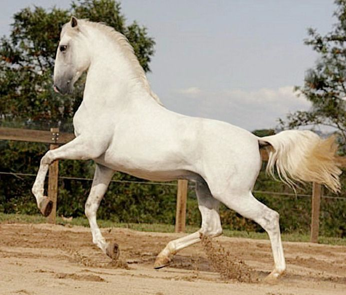

Este caballo se distingue de los de sangre fría (caballos de tiros) y de los caballos de sangre muy caliente (caballos de pura sangre y caballos árabes), porque como su nombre de ‘caballo deportivo’ indica, este es el fin para el que se cría: un caballo que participa habitualmente en concursos y en la recreación de las disciplinas más importantes: adiestramiento, salto, diversión y guía.
La evolución
El caballo deportivo holandés es un caballo deportivo moderno, nacido de caballos alemanes, franceses e ingleses que fueron cruzados con las razas indígenas. En el siglo pasado, las razas holandeses las más importantes eran el ‘Gelderlander y el ‘Groniger’.
En estos últimos 200 años se han agregado muchas líneas de sangres extranjeras (tanto caballos de pura sangre como caballos árabes) de Francia, Hannover, Prusia Oriental e Inglaterra. La cría de caballos en Holanda existe desde hace mucho tiempo y es el origen de la calidad profesional que actualmente tiene el caballo KWPN.
Sus cualidades
El caballo KWPN es muy polifacético. Se posiciona en el nivel más alto de los concursos, porque su carácter tranquilo y constante hace que realice su trabajo a gusto y que esté dispuesto a esforzarse en todos los materias.
Si consultamos los primeros puestos en las clasificaciones de los concursos nacionales e internacionales encontraremos con toda seguridad un KWPN.
El caballo KWPN es muy polifacético. Excede al nivel más alto de los concursos. El carácter tranquilo y constante hace que el caballo KWPN esta hecho para su trabajo y el caballo esta duspuesto para se esforzar en todos los materias. Cuanda mira las listas del concursus nacionales y internacionales encuentra con todo seguridad los caballos KWPN.
En cuanto a sus características físicas:
- El caballo KWPN tiene 1.60 hasta 1.75 metros de alto.
- Los colores frecuentes son: alazán y marrón, pero también hay caballos blancos y caballos negros.
- Su cabeza es elegante con un perfil recto.
- El cuello es largo y encorvado.
- El hombro es inclinado y el pecho está hundido con mucho espacio para el corazón.
- Las piernas delanteras son fuertes y con muchos músculos. El anca está bien plantada y la articulación de salto apunta al suelo. Son precisamente estas cualidades físicas la que hacen que el caballo disponga de un motor delantero muy potente.
Entre el caballo deportivo, el caballo de arneses y el tipo ‘Gelderlander’ hay diferencias en tipo y movimiento. El caballo deportivo es criado para el adiestramiento y para saltar. El caballo de arneses tiene una apariencia orgullosa, lleva la cabeza en alto y muestra mucho movimiento de rodilla. Y el tipo ‘Gelderlander’ se acerca más a las cualidades de un caballo de trabajo ligero.
Los títulos y sus significados
-Las yeguas
Si miramos los datos de los caballos que tienen más de tres años en sus cartas de origen y papeles de raza, encontraremos unos titulos como: ster, keur, preferent, elite y prestatie.
El significado de estos titulos:
• Ster (estrella) Durante el examen en primavera la yegua puede recibir el titulo ‘ster’ cuando el jurado piensa que esta yegua tiene cualidades suficientes.
• Keur (selección) Este titulo sólo pueden obtener las yeguas de estrellas que tienen más de 4 años, y han obtenido éxitos deportivos y ademas tienen que tener un potro nacido hijo suyo.
• Elite (élite) Este titulo sólo pueden obtenerlo yeguas con el titulo ‘keur’ que salieron bien del examen veterinario. Este examen es similar al examen KWPN para sementales.
• Sport (deporte) Una yegua entra en consideración de este titulo si ganó los niveles siguientes:
El adiestramiento Z 2 + 1 punto ganado
Saltar Z + 6 puntos ganados
Eventos Z + 5 puntos ganados
• Prestatie(Pres/Prest) (éxito)
Para obtener este titulo la yegua tiene que tener 3 potros que han realizado en concursos el nivel M + 5 puntos ganados.
• Preferent (Pref.) (preferente) Este titulo obtiene una yegua que tiene 3 potros con el titulo ‘Ster’
• Crown (corona) Una yegua con el titulo ‘crown’ debe ser incluida en la lista mundial.
-Los sementales
• Licensed (L) (registrado) Se puede registrar un potro en el libro genealógico KWPN. Por eso el potro tiene que ser examinado. Si el test es suficiente el potro obtiene el título ‘Licensed’ (Se acepta unos 15%)
• Approved (A) Si un semental con el titulo ‘Lisenced’ hace el examen semental KWPN y aprueba, el semental obtiene el titulo ‘Approved’.
• Ster (estrella) Potros sementales de buenas cualidades que no obtienen el titulo ‘Licensed’ pueden obtener el titulo ‘Ster’ si estos sementales son aprovados por este examen.
En resumen, el caballo KWPN tiene todos los ingredientes necesarios para convertirse en el caballo deportivo más moderno y de mayor calidad que podemos encontrar ahora en el mercado y todo gracias al complejo sistema de cría holandés que es puntero en todo el mundo. Este sistema nos garantiza que los caballos no heredarán enfermedades congenitas, los criadores buscan también animales con buen caracter. El caballo KWPN destaca en los deportes como el salto y la doma clásica (dressage) en este último deporte ha ganado varios juegos olímpicos y campeonatos de Europa para el equipo holandés en los últimos 10 años.
|
|
|
|

|
|
|
|
|